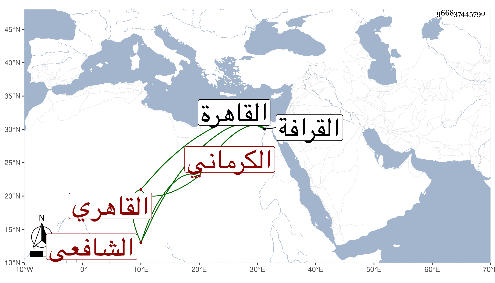

0902Sakhawi.DawLamic.ITO20230111-ara1.EIS1600.966837445790
Biography ID: 966837445790
777
علي بن شهاب الدين الكرماني ثم القاهري الشافعي نزيل القرافة ويعرف بملا علي . قدم القاهرة وأخذ عن المناوي بقراءته قطعة جيدة من القونوي شرح الحاوي بل حضر تقاسيمه . وزبر ابن الأسيوطي في خلوته فوقه ثم لازم بعده في الفقه الشمس البامي وقرأ على الشرواني شرح الطوالع للأصهاني في أصول الدين ولازمه في غير ذلك وكذا قرأ على التقي الحصني ، بل قيل أنه أخذ عن العلاء الحصني والنجم بن حجي ، وتميز في الفضائل سيما العقليات وشارك في غيرها ، وحج وتنزل في الجهات وأقرأ الطلبة بزاوية نصر الله وغيرها على طريقة حسنة في التواضع والسكون والتودد واستقر بسفارة شيخه العلاء في مشيخة التصوف بالتربة الجانبكية بباب القرافة وسكن بها . وممن أخذ عنه الخطيب الوزيري بل كان يتردد لبني الشرفي بن الجيعان في حياة أبيهم للإقراء . وبلغني تقدمه في السن مع كون لحيته سوداء ولا بأس به .
